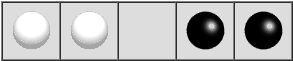
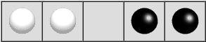

回溯法
数据结构
回溯法其实质就是一个带减枝的DFS过程。 有时会遇到这样一类题目，它的问题可以分解，但是又不能得出明确的动态规划或是递归解法，又需要对整个问题进行遍历才可以得到答案时。 回溯问题一般有如下三种：
- 遍历求：有没有解
- 遍历解求：
- 求所有解的个数
- 求所有解的具体信息
- 遍历解求：最优解
1. 构造解空间树
我们以第一种问题为例，假设构造出了如下的解空间树  我们需要对这颗二叉树进行遍历。
我们需要对这颗二叉树进行遍历。
2. 找到约束条件
我们在遍历问题较小的上，比较容易。但是一但问题的规模大到了一种程度，就不可能完全遍历整颗二叉树。所以我们需要些约束条件去限制我们的遍历。这就是约束条件。
3. 带入回溯框架
boolean solve(Node n) {
if n is a leaf node {
if the leaf is a goal node, return true # 减枝
else return false
} else {
for each child c of n {
if solve(c) succeeds, return true # 递归
}
return false
}
}例：Cindy’s Puzzle
你有n个黑色棋子和相同数量的白色棋子，并且有一个2n+1的空间存放棋子。 其原始状态如图下：  我们要将他移动为：  我们规定的移动方式为： - 黑色棋子向右移动，白色棋子向左移动。 - 每个棋子只能向前移动一格或跳过一格。
我们要将他移动为：  我们规定的移动方式为： - 黑色棋子向右移动，白色棋子向左移动。 - 每个棋子只能向前移动一格或跳过一格。
移动例子： 
1. 构造解空间树
首先我们可以想到，每移动一步，这个问题就是一个新的状态。但是这个问题的图像难以构造，较为复杂。
2. 找到约束条件
此问题的约束条件很明显是是否无法移动，当无法移动时此节点就为叶节点，需要返回上一层。
3. 带入回溯框架
根据上面的回溯框架带入如下。
bool solvable(int board[]) {
if (puzzleSolved(board)) { return true; } /* 是否结束 */
for (int position= 0; position < BOARD_SIZE; position++) { /* DFS */
if (canMove(board, position)) { /* 剪枝 */
int *newBoard= makeMove(board, position); /* 生成新状态 */
if (solvable(newBoard)) { /* 递归 */
printBoard(newBoard); /* 输出状态 */
return true;
}
}
}
return false;
}4.完整程序
#include <cstring>
#include <iostream>
#include <unistd.h>
using namespace std;
#define Dcout(x) cout << #x << ": " << (x) << endl
#define BOARD_SIZE 7
#define EMPTY -1
#define WHITE 2
#define BLACK 1
int FIRST_BOARD[BOARD_SIZE]= {BLACK, BLACK, BLACK, EMPTY, WHITE, WHITE, WHITE};
int FINAL_BOARD[BOARD_SIZE]= {WHITE, WHITE, WHITE, EMPTY, BLACK, BLACK, BLACK};
bool puzzleSolved(int board[]);
bool canMove(int board[], int position);
int *makeMove(int oldBoard[], int position);
void printBoard(int board[]);
bool solvable(int board[]) {
if (puzzleSolved(board)) { return true; }
for (int position= 0; position < BOARD_SIZE; position++) {
if (canMove(board, position)) {
int *newBoard= makeMove(board, position);
if (solvable(newBoard)) {
printBoard(newBoard);
return true;
}
}
}
return false;
}
bool puzzleSolved(int board[]) {
for (int i= 0; i < BOARD_SIZE; ++i) {
if (board[i] != FINAL_BOARD[i]) { return false; }
}
return true;
}
void printBoard(int board[]) {
for (int i= 0; i < BOARD_SIZE; ++i) {
printf("%s ", [&board, &i]() -> const char * {
switch (board[i]) {
case EMPTY:
return "_";
break;
case BLACK:
return "●";
break;
case WHITE:
return "○";
break;
default:
break;
}
return "";
}());
}
printf("\n");
}
int *makeMove(int oldBoard[], int position) {
int *newboard= new int[BOARD_SIZE];
memcpy(newboard, oldBoard, sizeof(int) * BOARD_SIZE);
switch (oldBoard[position]) {
case WHITE: {
newboard[position]= EMPTY;
if (newboard[position - 1] == EMPTY) {
newboard[position - 1]= WHITE;
} else {
newboard[position - 2]= WHITE;
}
} break;
case BLACK: {
newboard[position]= EMPTY;
if (newboard[position + 1] == EMPTY) {
newboard[position + 1]= BLACK;
} else {
newboard[position + 2]= BLACK;
}
} break;
default:
break;
}
// delete[] oldBoard;
return newboard;
}
bool canMove(int board[], int position) {
switch (board[position]) {
case EMPTY: {
return false;
} break;
case BLACK: {
if (board[position + 1] == EMPTY || board[position + 2] == EMPTY) {
return true;
} else {
return false;
}
} break;
case WHITE: {
if (board[position - 1] == EMPTY || board[position - 2] == EMPTY) {
return true;
} else {
return false;
}
} break;
default:
break;
}
return false;
}
int main(int argc, char const *argv[]) {
int *first_board= new int[BOARD_SIZE];
for (int i= 0; i < BOARD_SIZE; ++i) { first_board[i]= FIRST_BOARD[i]; }
solvable(first_board);
printBoard(FIRST_BOARD);
return 0;
}5.程序结果
➜ Backtracking ./backtrack
○ ○ ○ _ ● ● ●
○ ○ ○ ● _ ● ●
○ ○ _ ● ○ ● ●
○ _ ○ ● ○ ● ●
○ ● ○ _ ○ ● ●
○ ● ○ ● ○ _ ●
○ ● ○ ● ○ ● _
○ ● ○ ● _ ● ○
○ ● _ ● ○ ● ○
_ ● ○ ● ○ ● ○
● _ ○ ● ○ ● ○
● ● ○ _ ○ ● ○
● ● ○ ● ○ _ ○
● ● ○ ● _ ○ ○
● ● _ ● ○ ○ ○
● ● ● _ ○ ○ ○大家不要以为我这里出错误了。我是在程序返回的时候输出，因为这是一个DFS遍历，所以我的状态输出是先从深到浅的。
动画演示：